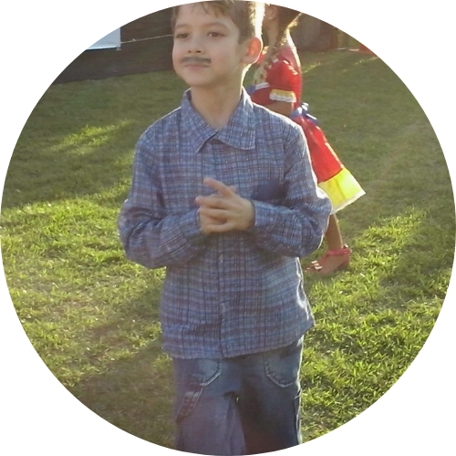

 |
HISTÓRIA
Nascido em São José dos Campos, Rafael Tobias sempre foi
uma criança muito energética, gostava muito de brincar e
realizava todo tipo de esporte. Passou seus primeiros anos na
escola de formação primária, logo iniciando seu ensino
fundamental na Escola Estadual Doutor Pedro Mascarenhas.
Sempre foi um aluno curioso, então conseguia tirar notas boas
apesar das traquinagens que praticava.
Durante toda infancia cresceu dentro de uma familia amorosa
que sempre o motivava a ser alguém relevante na sociedade.
Hoje ele ainda segue buscando seus senhos, mesmo sem ter certeza
de muitos deles.
|